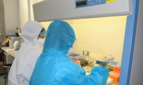

Trưa 1/6: Thêm 50 ca mắc COVID-19 trong nước tại 4 tỉnh, thành phố, riêng
Bắc Giang 32 ca
Suckhoedoisong.vn - Bản tin trưa 1/6 của Bộ Y tế cho biết có thêm 50 ca
mắc COVID-19 trong nước tại 4 tỉnh, thành phố, riêng Bắc Giang 32 ca.
Thông tin diễn biến dịch COVID-19 ở Việt Nam
Tính từ 6h đến 12h ngày 01/6 có 50 ca mắc mới (BN7433-7482):
- 0 ca cách ly ngay sau khi nhập cảnh.
- 50 ca ghi nhận trong nước tại Bắc Giang (32), Bắc Ninh (9), Lạng Sơn (8), Long An (1).
Tính đến 12h ngày 01/6:
- Việt Nam có tổng cộng 5.976 ca ghi nhận trong nước và 1.506 ca nhập cảnh.
- Số lượng ca mắc mới tính từ ngày 27/4 đến nay: 4.406 ca.
Số ca mắc COVID-19 trên thế giới tính đến 12h ngày 1/6
- Cả thế giới có 171.084.991 ca mắc, trong đó 153.226.975 đã khỏi bệnh; 3.557.990 vong và 14.300.026 điều trị (91.800 ca diễn biến nặng).
- Trong 12 giờ qua, số ca mắc của thế giới tăng 84.283 ca, tử vong tăng 2.034 ca.
- Tại Đông Nam Á, trong ngày ghi nhận 25.466 ca, trong đó: Malaysia tăng 6.824 ca, Philippines tăng 6.684 ca, Indonesia tăng 5.662 ca, Thái Lan tăng 5.485 ca, Campuchia tăng 690 ca, Đông Timor tăng 97 ca, Singapore tăng 23 ca, Lào tăng 1 ca.
Thông tin chi tiết các ca mắc mới:
- CA BỆNH BN7434-BN7441 ghi nhận tại tỉnh Lạng Sơn: 4 ca F1, 3 ca liên quan ổ dịch Khu công nghiệp Quế Võ, 1 ca liên quan ổ dịch Khu công nghiệp Vân Trung, đã được cách ly. Kết quả xét nghiệm ngày 31/5/2021 dương tính với SARS-CoV-2.
- CA BỆNH BN7445 ghi nhận tại tỉnh Long An: nam, 22 tuổi, địa chỉ tại huyện Cần Đước, Long An; đang được điểu tra dịch tễ. Kết quả xét nghiệm ngày 31/5/2021 dương tính với SARS-CoV-2. Hiện đang được cách ly, điều trị tại Bệnh viện Nhiệt Đới TP. Hồ Chí Minh.
- CA BỆNH BN7433, BN7442-BN7444, BN7446-BN7458, BN7466-BN7474, BN7477-BN7482 ghi nhận tại tỉnh Bắc Giang trong khu cách ly và khu vực đã được phong tỏa, liên quan đến công nhân làm tại các khu công nghiệp. Kết quả xét nghiệm dương tính với SARS-CoV-2.
- CA BỆNH BN7459-BN7465, BN7475-BN7476 ghi nhận tại tỉnh Bắc Ninh: 2 ca F1, 2 ca sàng lọc ho sốt, 3 ca liên quan ổ dịch Thuận Thành, 2 liên quan ổ dịch Khu công nghiệp Khắc Niệm. Kết quả xét nghiệm dương tính với SARS-CoV-2.
Tình hình điều trị:
- Số ca âm tính với SARS-CoV-2:
+ Lần 1: 161
+ Lần 2: 91
+ Lần 3: 79
- Số ca tử vong: 47 ca.
- Số ca điều trị khỏi: 3.043 ca.

TIN LIÊN QUAN

Gần 30.000 cán bộ y tế, sinh viên y dược đã có mặt, sẵn sàng đến chống dịch COVID- 19 tại Bắc Giang, Bắc Ninh
SKĐS - Ngoài 2.743 lực lượng y tế tham gia hỗ trợ trực tiếp tại hai điểm nóng dịch COVID-19 Bắc Ninh, Bắc Giang trên các mặt trận truy vết, xét nghiệm, cách ly, khoanh vùng dập dịch, điều trị, truyền thông, hiện có 26.768 cán bộ y tế, chuyên gia, học viên, sinh viên ngành y sẵn sàng tình nguyện đến tâm dịch…